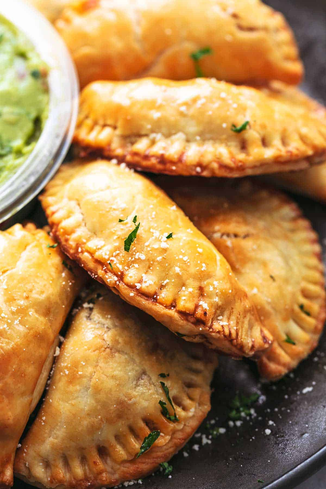

Beef Empanadas

Description
These Beef Empanadas are Argentine-style empanadas. They are flaky, hand-held pastries
filled with seasoned beef and sauteed onions, often mixed with olives and hard-boiled eggs.
They're folded into half-moons, sealed with a crimped edge, and baked until golden and crisp.
These can be part of a main meal or as a savory and hearty appetizer. Enjoy!
Ingredients
Empanada Dough:
- 2 1/2 cups all-purpose flour
- 1 1/2 teaspoons kosher salt
- 1/2 cup unsalted butter
- 1/4 cup cold water
- 1 large egg
Empanada filling:
- 2 teaspoons olive oil
- 1 pound ground beef
- Kosher salt
- 1/2 yellow onion, diced
- 1/2 red bell pepper, diced
- 3 garlic cloves, peeled and minced
- 5 green olives, minced
- 3 tablespoons tomato paste
- 1 teaspoon ground cumin
- 1/2 teaspoon ground paprika
- 1/4 teaspoon crushed red pepper
- Kosher salt to taste
For Assembly:
- 1 large egg, whisked with 1 tablespoon water
Steps
Making The Dough:
- In a large bowl, mix together the flour and salt. Using a box grater, grate the cold butter
atop the flour mixture. Working quickly, and using your hands, break the butter bits into
the flour until they're evenly distributed and resemble the size of small peas.
- In a measuring cup, measure out the water and whisk in the egg. Pour the liquid into the flour;
the mixture will be shaggy at this point. From here, add 1 tablespoon of water at a time until
the dough comes together (I usually need to about 1 more tablespoons). Flour your counter and
dump the dough onto it. Knead a few times more until it comes together. Form into a disc. Wrap
the disc in plastic wrap and transfer to the refrigerator to chill for at least 1 hour, ideally
overnight.
Making the Filling
- In a medium saucepan, set over medium heat, add the olive oil. When the oil is warm, add the ground
beef. Break up the ground beef using a wooden spoon. Sprinkle with a few pinches of salt and pepper.
Cook the meat until mostly browned.
- Add the diced onion, red bell pepper and garlic. Cook until softened, about 5 minutes.
- Add the green olives, tomato paste, cumin, paprkia, crushed red pepper and a few pinches of salt.
- Give it a good mix and cook about 5 minutes more, stirring occassionally. If the mixture seems a bit
dry add a splash of water.
Assembling The Empanadas
- Roll out the disc of dough into a 1/8-inch thickness. Using a 6-inch round cutter, cut out as many circles
as you can. Re-roll the scraps and cut out a few more.
- Transfer the rounds to a parchment-lined baking sheet. Lightly brush each dough round with egg wash. Add a
tablespoon of the meat filling to one side of the circle of dough; fold the dough over, creating
a half-moon shape. Using the tines of a fork, seal the empanada's seam together by pressing them together.
Repeat until you've worked through all of the empanadas.
- Transfer the baking hseet of empanadas to the freezer to chill for 15 minutes. Preheat the oven to 400
degrees F. Brush the empanadas with egg wash and using a knife, pierce the top to allow steam to escape.
Bake for 20 to 25 minutes, until golden brown. Eat immediately or room temperature. Serve with salsa or chimichurri.
Home